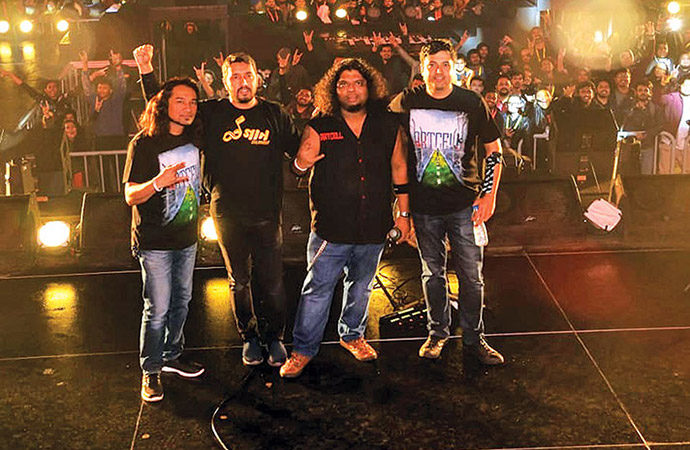

Formation and Early Days (1999-2000)
Prior to forming the band, the four founding members were school friends
from Dhaka, and used to get together to play Metallica songs. Eventually,
Ershad came up with compositions of his own and the group began to play them at shows.
The positive response they received led to the formation of a band.
What started off as an underground band is now one of the most
recognised mainstream bands in the Bengali metal music scene.[2]
The name "Artcell" was decided upon because it was softer sounding
than a typical heavy metal name. In Cézanne and Shaju's words:
Even though we were a heavy metal band when we started, we didn't
want a heavy metal name. We wanted a softer or an artistic touch to
the heavy metal side. 'Cells where art is produced' – that was pretty
much the basic idea behind the name 'Artcell.' Ershad came up with it and we all
opted for it.After the success of
অন্য সময়, Artcell spent four years c
arrying out experiments with their music without releasing an album.
They did, however, release singles scattered in various albums by other
bands or compilation albums. Their second studio album "Aniket Prantor (No man's land)"
was released in April 2006. The album was one of the top sellers of the year.[4]
"Aniket Prantor (No man's land)", the album's namesake, is Artcell's
longest song to date, at 16 minutes and 21 seconds.[5]
In May the band performed their second solo concert at Dhaka's Bashundhara
Convention Centre.[6]
In 2016, Artcell released their new music video "Obimrishshota"
from their third album Otriteeyo with the original band lineup.
After almost 10 years their new song had been released, written by
their new lyricist Ishtiak. Both Cézanne and Shaju remain in Sydney
, but they participated i
album work. Cézanne recently said in an interview that he is planning
to be back in the country soon.
In the 17 years since its inception, the band has released two albums. Their third album
was scheduled to be released in December 2016. Initially scheduled for a 2012 release,
it is widely speculated that the delay is due to Cézanne and Shaju's inactivity,
and
to Ershad and Lincoln's busy schedule. But later band members among themselves created
controversy fighting each other in social media. There was three versus one fight , as
Ershad was all alone. Lincon carried out the band with his favorite students and knowns.
In 2019, Kazi Faisal Ahmed (founder and lead guitarist of Metal Maze) joined Artcell as
their permanent lead guitarist and performed in the highly esteemed open air concert "
Joy Bangla" Concert. Artcell released a heavy sounding track with Kazi Faisal Ahmed pl
aying the solo within a very short time.
Later that year, Artcell played on their 20 y
ears anniversary open-air gig in the Expo Zone of International Convention City B
ashundhara (ICCB).

In May the band performed their second solo concert at Dhaka's Bashundhara
Convention Centre.[6]
In 2016, Artcell released their new music video "Obimrishshota"
from their third album Otriteeyo with the original band lineup.
After almost 10 years their new song had been released, written by
their new lyricist Ishtiak. Both Cézanne and Shaju remain in Sydney
, but they participated i
album work. Cézanne recently said in an interview that he is planning
to be back in the country soon.
In the 17 years since its inception, the band has released two albums. Their third album
was scheduled to be released in December 2016. Initially scheduled for a 2012 release,
it is widely speculated that the delay is due to Cézanne and Shaju's inactivity,
and
to Ershad and Lincoln's busy schedule. But later band members among themselves created
controversy fighting each other in social media. There was three versus one fight , as
Ershad was all alone. Lincon carried out the band with his favorite
Cézanne and Shaju, two of the founding members, have not been active with the band for a long time.
They only work with the band when they come to Bangladesh. The official Artcell website says that both
of them have settled in Sydney, Australia, for family reasons. Ershad And Lincoln are presently running
the band themselves with guest
members.
In 2016, Artcell released their new music video
"Obimrishshota" from their third album Otriteeyo with the original band lineup. A
fter almost 10 years their new song had been released, written by their new lyricist Ishtiak.
Both Cézanne and Shaju remain in Sydney, but they participated in the album work. Cézanne recently
said in an interview that he is planning to be back in the country soon.
In the 17 years since its inception, the band has released two albums. Their third album was
scheduled to be released in December 2016. Initially scheduled for a 2012 release, it is widely
speculated that the delay is due to Cézanne and Shaju's inactivity, and to Ershad and Lincoln's busy
schedule. But later band members among themselves created controversy fighting each other in social
media. There was three versus one fight , as Ershad was all alone. Lincon carried out the band with
his favorite students and knowns.
In 2019, Kazi Faisal Ahmed (founder and lead guitarist of Metal Maze) joined Artcell as their
permanent lead guitarist and performed in the highly esteemed open air concert "Joy Bangla"
Concert. Artcell released a heavy sounding track with Kazi Faisal Ahmed playing the solo within a
very short time. Later that year, Artcell played on their 20 years anniversary open-air gig in the
Expo Zone of International Convention City Bashundhara (ICCB).